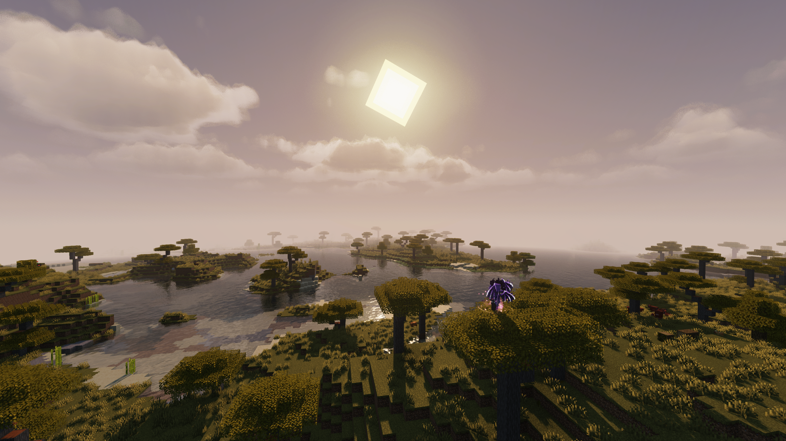

Welcome to the official Omikron Wiki. Omikron is a high-performance Minecraft mod designed to elevate your game experience with modern rendering techniques, smooth optimizations, and developer-friendly utilities.
Use this documentation to learn how to install, configure, and integrate Omikron into your modpacks or servers.
To run Omikron successfully, ensure you have a compatible modloader installed (such as Fabric or Forge depending on the release version).
mods folder.Omikron automatically generates a configuration file in your config directory once launched for the first time. You can fine-tune rendering parameters, performance options, and logging settings directly via the config file or in-game menu.
The Omikron Translator library mod provides helper utilities and localization extensions for developers building addons or companion mods. Documentation for developers can be found on our GitHub repository.
Omikron uses its own rendering pipeline and is generally designed as a modern alternative, so running it alongside Optifine is not recommended.
Please report any issues or crashes on our GitHub Issues page.
Loading team…
Loading announcements…